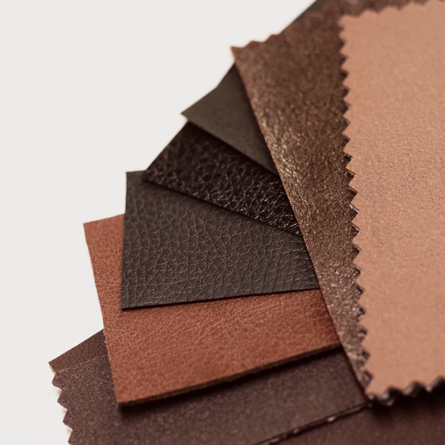

Material 01 · Roll goodsMateriale 01 · In rotolo
Non-woven fabricTessuto non tessuto
A customizable roll material for surfaces in packaging, furniture, fashion, accessories and interiors. It combines flexibility, durability and a distinctive tactile finish.
Un materiale personalizzabile in rotolo per superfici in packaging, arredo, moda, accessori e interni. Combina flessibilità, resistenza e una finitura tattile distintiva.
500+surface effectseffetti superficie
∞colors, no limitscolori, senza limiti
400+textile support optionsopzioni di supporto tessile
- FormatFormato
- 1.5 m width, 25 m rollsLarghezza 1,5 m, rotoli da 25 m
- OptionsOpzioni
- Thickness, unlimited colors, 500+ surface effectsSpessore, colori illimitati, oltre 500 effetti superficie
- BackingSupporto
- 400+ textile support optionsOltre 400 opzioni di supporto tessile
- ScentAroma
- Natural coffee scent, adjustable or neutralizedAroma naturale di caffè, modulabile o neutralizzabile
- UsesImpieghi
- Secondary packaging, furniture, accessories, interiors, fashionPackaging secondario, arredo, accessori, interni, moda